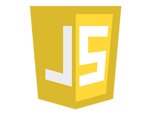

HTML5:
É a sigla de HyperText Markup Language, expressão inglesa que significa "Linguagem de Marcação de Hipertexto". Consiste em uma linguagem de marcação utilizada para produção de páginas na web, que permite a criação de documentos que podem ser lidos em praticamente qualquer tipo de computador e transmitidos pela internet.

CSS3:
É a segunda mais nova versão das famosas Cascading Style Sheets (ou simplesmente CSS), onde se define estilos para páginas web com efeitos de transição, imagem, e outros, que dão um estilo novo às páginas Web 2.0 em todos os aspectos de design do layout.A principal função do CSS3 é abolir as imagens de plano de fundo, bordas arredondadas, apresentar.

Java Script:
JavaScript é uma linguagem de programação baseada em scripts e padronizada pela ECMA International (associação especializada na padronização de sistemas de informação).É uma linguagem dinâmica, orientada a objetos e criada com sintaxe similiar à linguagem C.Apesar de conter Java no nome, a linguagem JavaScript é distinta da linguagem Java e apresenta recursos não disponibilizados em Java ou C++.
BOOTSTRAP:
Bootstrap é o mais popular framework HTML, CSS, e JS para desenvolvimento de projetos responsivos e focados para dispositivos móveis na web.Bootstrap oferece uma enorme variedade de plugins e temas compatíveis com o framework. Além disso, possui integração com qualquer linguagem de programação.
ANGULAR JS:
AngularJS é um framework em javascript, de código aberto e que é mantido pelo Google. Seu objetivo é aumentar aplicativos que podem ser acessados por um navegador web e tem como padrão o MVVM (Model-View-View-Model), em um esforço para facilitar tanto o desenvolvimento quanto o teste dos aplicativos.O framework AngularJS funciona através da leitura de páginas HTML, que tem embutido nelas atributos adicionais personalizados em suas tags.
GIT:
É uma ferramenta de versionamento amplamente utilizada em projetos com grande número de colaboradores, sem contar que é a plataforma na qual roda o GITHUB, serviço online que provê um servidor GIT gratuito para projetos.
IONIC:
É um completo SDK (framework) de código aberto para o desenvolvimento de aplicativos móveis híbridos. Construído no topo do AngularJS e Apache Cordova, o Ionic fornece ferramentas e serviços para desenvolver aplicativos móveis híbridos usando tecnologias da Web como CSS, HTML5 e Sass. Os projetos podem ser criados com essas tecnologias web e distribuídos por lojas de aplicativos nativos para serem instalados nos principais sistemas operacionais móveis existentes.
PHP:
É uma linguagem interpretada livre, usada originalmente apenas para o desenvolvimento de aplicações presentes e atuantes no lado do servidor, capazes de gerar conteúdo dinâmico na World Wide Web.[2] Figura entre as primeiras linguagens passíveis de inserção em documentos HTML, dispensando em muitos casos o uso de arquivos externos para eventuais processamentos de dados.